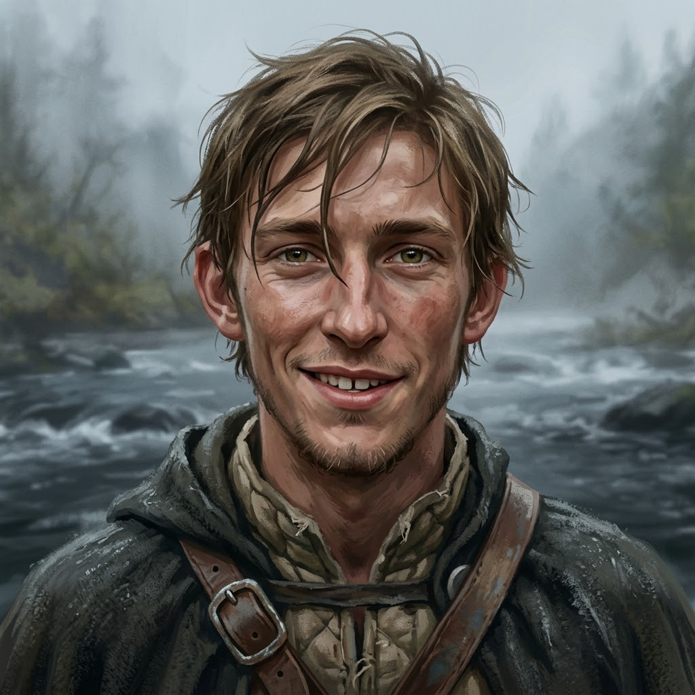

Tobin Marsh
Youngest of the Ninth Lance
Appearance
in briefNineteen, the youngest of the Ninth Lance: shaggy light-brown hair forever falling in his eyes, hazel eyes, wind-reddened cheeks, a patchy young beard, and a wide grin with a gap between his front teeth. He wore a quilted gambeson under a dark hooded cloak, with a leather strap across his chest fastened by an iron buckle. He rode his own horse at Darrow's left in the crossing at Harrow Ford, and he sang, badly and without stopping.
Last seen
on the pageGoing under his own horse in the current of the Wend, on the second heartbeat, as the Grace went out of the Ninth midstream.
Now
as far as the reader knowsLast seen going under his own horse in the current of the Wend at Harrow Ford. Nineteen of the Ninth Lance came back from the ford; Darrow knew the names of the other forty-one and did not say them.
Story so far
spoiler-freeHe rode with the Ninth Lance at Harrow Ford, at Darrow's left, when the Sixth and the Ninth were sent to clear the ford. Halfway across, the Grace went out of the Ninth: horses stumbled, lances dipped, and Tobin went under his own horse in the current. Darrow came off his mare and turned toward him, and on that turn the knee went. Nineteen of the Ninth came back from Harrow Ford.
Quote
No line of theirs is on the page yet.
Relationships
as seen on the page- Ser Darrow of Edgemoorhis captain
In the river Darrow's first instinct was to turn toward him, and the knee went on the turn.
The Reckoning
as Darrow reads it⟦ THE RECKONING ⟧
The script does not read those who did not come back.
Known facts
4What the page has shown (4)
- He was nineteen, the youngest of the Ninth Lance.Prologue · I — Harrow Ford
- He sang badly and constantly.Prologue · I — Harrow Ford
- He rode at Darrow's left in the crossing and went under his own horse in the current when the Grace left the Ninth midstream.Prologue · I — Harrow Ford
- When Darrow came off his mare, his first instinct was to get to Tobin and cover the left; the knee went on that turn.Prologue · I — Harrow Ford